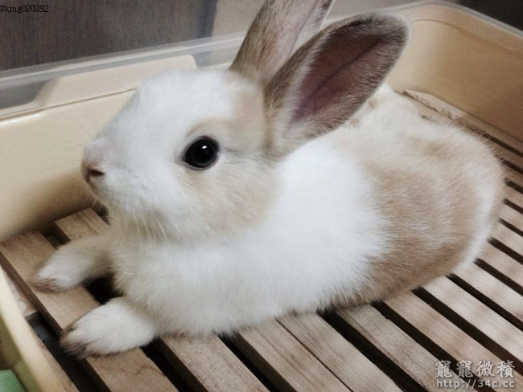

<!DOCTYPE html>

<html lang="en">
    <head>
        <body background="001.jpg"
        <meta charset="utf-8" />
        <title>侏儒兔</title>
    </head>
       <font color="#cc33ff"size="6"><h3>侏儒兔<h3></font>
        <hr>
        
        <title>ch03-4</title>
        
         <pre>
屬於寵物兔中最小的品種之一，耳朵小而直立。
成年體重1kg左右，體長30cm左右，毛色灰白相間。
這種小型兔只生活在華盛頓州的道格拉斯縣（Douglas County），而且沒有野生種類存活。
         </pre>   
        <html lang="en">
    <head>
        <meta charset="utf-8" />
        <title>侏儒兔</title>
    
    <hr>
    <a href="index.html">荷蘭兔</a> &nbsp;&nbsp;&nbsp;
    <a href="002.html">垂耳兔</a> &nbsp;&nbsp;&nbsp;        
    </body>
</html>


    </body>
</html>
